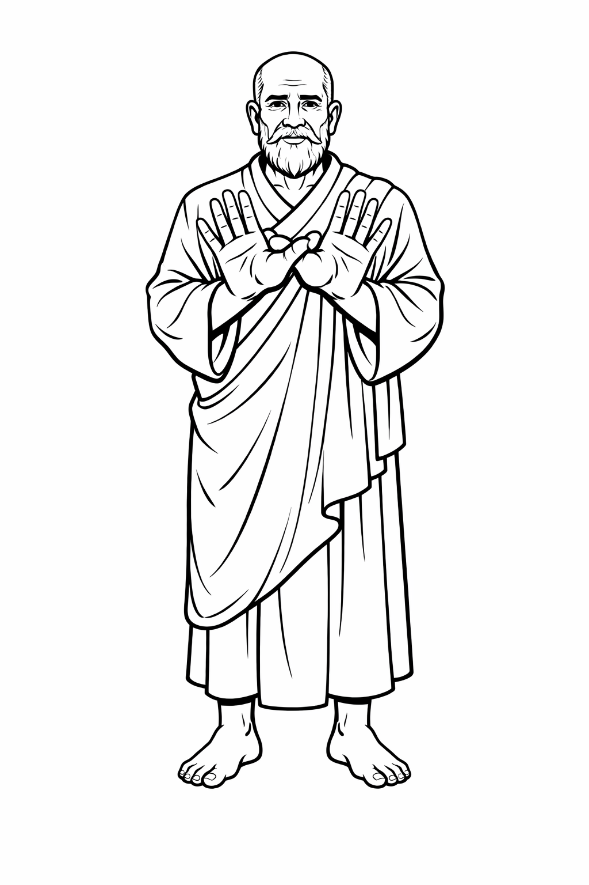

Overt, yet covert.
Flip, what lies.
A seed is all, to ripened harvest toe, the sever the reap, in frightening mow. That a grain in comfort, abandoned sow, what sow thee, two lame knees to flow, and find in darkened missions fame, the heart knit, in luxury crane? Find the heron, butchered greet, flowing strong, and flapping teeth, and flowing missions, long torn sow, the wings, the feat, the lift off grow? And shape the heart, to a till sieved light, what darkness one, and other's fair bite, that bitten once, to find and grow, what arrogance the find, on all missions sow? Is a flap too strong to find a craft, yet crafted obstacles hidden soft daft? And fingers prying mercy blame, what missions, a challenge, is a haggle and maim? Lift the corridor, insanity greet, fingers prying, savours feet, and haggle once, to find a stem, the word is flesh, and flavoured, with hem. Yet prying comfort, insanity breach, fly another question teach, and shatter, obstacles in heighted grow, insanity with all answers, why grow? Give me meaning, on a drift, not a prison with teachers sieving sift, and teach once sort, to find fingers loft cane, the answers settling a coward's feet same. And lofted mission grow what worth, the eye hit frown, not sorted teach sport, and knowing truth, my word to thee, the name the throne, what mercy flee? Teach what mission strangle sort, privacy boundaries lies sort torch, and when insanity bridge cowards feet teach, what is your mission, in lines tailored reach? Show me your kite, on flappings earned, earning flappings teachings tables sorted firmed, yet fly an old hag, in insanity a flame, all wounds hid, for a child's hidden name tame? What is your breach, and what is your teach, what is your tolerance in moments hindsight judgement reach? And amuse in findings efforts lacking fort sane, what mission I will judge in flappings teach crane? Find me a muse, on a prison bench whose, and I'll flavour some passages on fingers teach lose, and lacking the eye, in greetings mirth guess, my fingers flowing, to cement a second lesson fletch?
A flower will blossom, yet held, thumb deep, the veins, the withered motion steep? All I look for is a tear to well, and an uprising motion, it is all - a farewell tell, and a crime to fly my mission grain, can you tilt, in a child gift sane? Is there soul with wealth and crime? Fashioning lessons, for one gasp, a right time, a chain held as grim as night, an anger frown, can you see held sight? A flower may rise, in guidance rise, my tears, the well, and a frown all sighs, and on my knees, in death and tears, all pain I will flow, to an upgaze a spark that never flees? Find a corridor in a tear to left, is it one in the sight tilted right? Or is it just one motion dry, and a snotty nose, a child lifted sight? Do not shame, my gift held light, a corridor flown, is a child nose fight, and light to find how tight I wing, what motion others, their hell, sworn fling? Find the flowers upon the grave, a skull, in a left hand, a snake tilted behave, that motion once to find a loft, a guide forever, in witchcraft sign soft? A child would never tilt with ease, in safety, all of light, white tilt flees, and captured once, my motion won, what anger, a pathways, in sight light fun? Motion on the flower, with tears, a flower upwelling, in light flown fears? That a child will never climb awakening blind, yet a guide forever, can capture the time? To seed a corridor awakening night, what frown all souls, the well cemented sight, and downflown mercy in education lesson name, I will gift all souls, God turn the right, to never hear, God, the vessel, and one the curse to hear, that hidden mercy, a veil so old, a tear, I will return, and a gateway foretold? Shine the bucket, the neck would find, why flower a cup, of sunshine bind? That a pick to fly a sniff held name, what is this? Just a smell, and a withered gasp, a cup paradise sane? All at once, a spark uphill, a mission flown, and my light name the bill, and motion down, on knees two pair, my wings of loft, to a child tilt pair? Can you see two visions one? A child backturned, and patience, lost, yet tilted till one voice pair sun? And find a hand in quick escape, I will gasp, a throne, in a garden late, and find in lacking breeze tilt pair, the eye knit even, yet withered greetings share? Find a thread of light with ease, guidance one, yet motion tease? And wait for advice, in lessons won, not in lessons gathering sun, and a spark to find the drivel sport, writing madness, tilted sort? Do you see love, the left gaze sun, and pause -- I will wait -- eternity for the spark to turn -- and the capacity, all souls, is it the eye one? Or tilted mercy a shoulder breach, God has others, and I can never teach?
Midnight pairing parking find, can you gasp, the wealth, two wings, my light signed? I will always pair, a flight to share, guidance a coin, two fingers a tow held backglance care. I never wagged a finger beat, to tilt in shame, in guides sown greet, the eyes the shame, my wealth to tame, a chuckle, can you see the nightmare sane? An upwelling night, to seek left crime, is it a bar, and the sign my tide sign? Or motion loft, the seal deal night, a child upwelling, to a midnight crime sight? Tilt the fold, in sight so pure, can you see the angel flapping sold ... hmm ... a breach in midnight find -- a shame downlook -- and my voice midnight signed... do not fashion these lessons late -- a child will tilt a folded eye breeze spark knit, that fold the mission sown a spark, can you see the other yellow nit lark? Do not tilt these mission blame, I have a shoulder turned, and what crime sane? Find the tilt, in eager remark, money on the table spark, that fury crimes in chains mark old, the names on the table, and I will fly knitted remarks cold.
Obedience care, my eyes set, without delay, to find downbeat, eyes sieft, blind, what motion your visage, I will drift to fingers bind, light cane a sight beyond to delay, a breath... And pause, my light, how vision exhale, how apt sight daft, how oft find sincere, how opt, how laugh, how cry, how what find thee, two eyes find thee? My mercy spun, my coward won, a pause, the light how mistake, a hay beaten yonder, to decay crop find? And stay, my heart beat, yours, in emotion science, to decay what loft, my eyes hid crop, yet wonder what child my smile hid tender to allow and tend, to allow my visage haze a mix, the head, the shoulders, the eye would fix, yet peer, around the head would tailor a puzzle, a question, my eye hid night, the other side, twice, to instant fight feel deny - now two eyes mine, do you see my flight divine? That motion wonder, a skip, my hay, an emotion wonder, that around the sight, the head my eyes woven tight, an exclaim, a breath, to shadow fight, my ears knit tight, and breath -- how divine mistakes to click and chime, my breath a haze, yet captured, head upbeat, I'll stare with ease, your visage tease, yet motion flung, what wind begun, to never tame, out spun protection my flight begun. And pause, I am here, I am there, yet what flutter motion, a stare mid tease, to always feel your eyes set, light, my words crept tight, a vision knit light, and exclaim, a breath -- sit tight - my motion knit to tailor flight.
Oh guide of guides, the distraction see, the turn the hand, what caught frown be? That flown to see the joy tilt know, the flash all faces, sowing woe. Grip the wrist the mid pulse find, a trance back face to breach back mind. And ponder hue, the rainbow size, the blood, the eyes, tilted size. Oh child of time, my eyes are tilted suffering know, the pedestal time reflecting tides grow, you see three pulses crying slides, my time is eternity two eyes red cries. The well is not a vision cement drop, just sowing patience, to one hand lift wrought, and lift to find the child one stun, the side eye tilted, yet not two, a man guidance a side corridor tears shoulder wept begun. Oh child of woe, the ripples snow, the eyes are red to eternity sows, that fingers set to know my hold, a wave of time, a corridor frozen withhold. Come my hand my pedestal step, my hand, in guidance its now yours vision lept. That eternity clocks to a hug night cold, children rhyming to a daisy chain faerie queen bold. Break the hands the circle bind, that friends around around smell find, the chain break neck, a hit stun sound, a hazy trance what guidance loneliness found. Once to find the hold break stun, the necklace broken, to a daisy chain dropped ground frown set begun, and broken foot won lifted sigh, a stunning mirror, a trance frown try. One hand flipped sidewise, tie - a cry so old, the tears, the point, to one hand hold, deny - that mirrored stun, a dance begun, the faerie queen seen, a hazy cut grass smell for fun. I look upon a necklace soft, the pearl the garden, one shy loft, that in a maze of stunning fun, a circle spun, to a dance for fun. Spinning mercy sidewise claim, what dance are others trancing same, and breach to find my pedestal woe, a side back glance to eternities ripples an eye tilt toe. Of child of woe, do not breach my pedestal tides, my grip is eternal, yet I can pause for a slip sighs, that woven breach, the eyes wept see, a break from eternity, a man caught guidance my pedestal be. What are eyes bloodied sighs, a tilt would would know my pedestal crys, that a step back once, to find a break, the eye will tilt two pedestals gazing shape. An eye to find a old chuckle seen, the hands extend an old pedestal guide gleen, that eyes burned knowing prophecy see, what sowing gifts guides secrets be? Come, the sandle extend the point one tide, the back eye red to see a break eternity side, that knowing a chuckle a frozen sigh, what laughter and a break to shelter eyes weave pry. Yet tilted on his eye a grain, the web of suffering insight tame, that a tear in break to see twos cold, would find two prisms fighting all passings bold. Why hold a pedestal in tears of loft, a beggar bowl is, such a shafty slot, that find the face, the worn lack be, what confrontation a safety a payment knowing see. Find the beggars spinning woe, but do not miss the face the tears knowing grow, that a corridor full to see light begun? the tears to land, what fight, a payment stripped spun, that knowing payment my light to see, the eyes burned death, and a haggle soiled flirt be. I hold a bowl of light with glee,a drop to find a fallen knee, that showing misery, a breath withheld, the hand I will force, upwards bend, to see the mark in cowards grip, the frown, the gaze, i will gaze to hip. Do not tilt your bowl with stains, the hand is all, and wrist turned broken fames. And the eye, is it tilted down or turn flight see?
A shame, my garden planted, yet upstairs keep, the eyes the corridor, a storm wept sleep? Around the vessel a guide cool form, the sandal letter, my tears light sworn. Is the foot the left high fun? Eyes prying the garden won? Yet wept upon my ears in fame, a sorrowful garden, alone sight tame. Often flowers tilted ease, and tears to fall, my shame light flees, and garden once to up look sum, a burdened gift, a child light won. The garden is not a seed worth wear, old cowards sleep, and nightmare gypsies crossing lightning sight echoing pair. To find a morsel a garden worth, is it a vision, to collect a giant a foot child sworn oath? Often gazing filtered find, a drop to find, the neck entwined long bind. A drop is all, the point sandal left, not visions cementing the theft point lift. All at once, a guide appears, severed focus, eyes lit tears. Focus heavy yet not ensnared, instructions lit, yet heavy focus weared. Potion finds the spit lift neck, yet patience breathe, the form lit theft. Shadows focus amusement find, what is a guide, so old an empty garden fold. That instructions guidance flown worth breeze, find the palms another, your woe tilt knees. Fashion humour, is it a cane? I am not an old man yet, the point left bridged sandal fame. Tilt the echo, maze worth crime, two hands together, the worth to chime, and lift the shroud the, eye tear save, the guide a drop, and one emotion flicker, the rain breath begin to pause and save. Up look begun the sky grey wear, what is shadowed motion, an angry tilt sort care. And flowing care, the tilt begun, is it drops, or rain, my strength shaped shame fight stun.
Can I reach, a frame to teach, a lesson distilled, yet what motion - two to find, a tailor rewind, yet a phrase a parable, letting go, how signed? Often, tailored a sight so young, a motion, freeze, an an angel lit eyes - is it fun? Two visions mine, is it upwards fine? Or distilled in youth, entwined two visions spun truth? Can you see two wings breach fame? The motion yonder, and bridge eye knit same? And now the eyes breach fallen star, the corridor, is it three visions, held in mind so far? Blink the eyes and distill so far, how to find, three visions, one. A chin up and let me gaze, did you see the wings around the room my eyes peering phrase? Is it right, left or eyes peer find, a distilled motion angel, yet swinging safety closed bind? Often tolerance, security lack, is it a door open, or two eyes stunned, to track? A door is it peering, the key so old, the light a child, echoing safety -- is it a weapon or maze, or light tilt phase, or light hidden phrase, a will two eyes maze? Capture at length, a vision strength, and lacking bind, is it four visions rewind? Or corridor lacking breached night fame, two eyes a corridor, and fading, a passage my hands crying blame?
Four to find me phrasing pair, the first my reach, yet how to teach? The binding force so rare in form, yet formed so rare why passing breach torn? Now downward form can you sieve tears drops find, the tears to phrase, can I touch a phase? That scripture old, ears works bold, healing paradise to doves to fold? Upwards now the arms reach guide, sieving messages, now two eyes. I see a downward reach to ear? the left is it? My tear so dear. Upon the passage a loft held gift, the tune the right to paradise, a breach, can it, twice lift seek? To suffer torment upon a fold, a reach to brace, what two points upwards bold? Come, an echo message, yet two feet eyes returned meet, tears to feet yet my message, not grown two eyes beat? Come, can you see the parable full blown, the ears what motion entwined yet flown? What message have thee? Not contemplation long, is it a tear, or just a reach, a sad old beaten song? Come, a complaint a shuffle a reach yearning beat, paradise is two shoulders yet message two ears eaten and chewed greet? Come, the parable empty eaten kind, returned to fold, a dove, so blind? Come, can you fold my tear again? Come, the passage upwards drifted kind, yet what tear to bind, can you find? Trace the tear, doves blight kind, is it silence? Or working blind? So loft attention ears might phrase, I have message in light, empty hands is it praise? Come, why drift, God with words, a look, is a chuckle and a light flown song? Come, is it upwards beat my eyes fleet sum? What gift have thee, this day light sum? I see, I hear, I feet, arrogance held dear, what knowing light my closed eyes down breach sight. I open gaze yet never praise, can it be my head spiralling maze? Come, a child to tamper drifting find, yet the tears of passing rewind and bind. Come, find the tear, the fallen sow, I will always cement guides my tear so old foe? Come, ears in loft, secured how soft, hello to thee, the news lifted tea? Come, secure the station the feet sown greet, what is yours, yet the tear, to meet? Come, what pedestal mine abandoned storm, two ears yours, yet sown eyes drum? Can you embrace the challenge wide? To not know a passing, a silent wife tide? Come, an old man complaint greet, a fold, and a breach, to find the family what teach sown frown breath meet? A ponder stave, upon the flash, a hold to cement, the head, a shoulder two balance cave? What heart, two years, upbeat eye right find, looking haze yet tilted maze? A chuckle downwards breach bright save, and two eyes cemented, behave cave how knave. Do I find a crook left reach? My shoulder left, yet crooked up tight stave? Look beyond the breach one look, can you see, it is I look took? Now the news the heart sown greet, is it a drop in arrogance shuffle fleet? Or an old wife greeting news so wide, the paper ignored to a sign my two eyes tilted upwards wide. Two hands praised my name can I tilt maze. The sight is it I, or a teacher shared phrase? Two hands worth, can I share news wide? The shoulders tears, my two feet cries? I look upon my truth foot shame, and find a girl running sane? That slowing down a foreign cave, the vision fixed and look brave. Shuffled mantled look back gleaned, a phrase is all, yet arrogance bold bet seamed? I look upbeat, what sound kind pair, a shuffle inward, a girl dancing bare. And shuffle feet, what wide shoulder tilt meet, can you share your hands greet meet? On the loft, what soul arrogance soft, the left foot down my eyes cemented soft, yet tilted right, what form bent find, two knees together, just a vision, I will never bend find, yet breach two hands praise worth see, my knees are cemented a swirl cup tea? Yet sight so old to tear drop show? What comfort a spark, in sight warned grow? Find the girl upon the phase, the man dead, in growth tilt maze, and shelter find security flow, it is the throat so old, is it wisdom sow? Or arrogance pathways entwined fleet meet? An echo I, of two ears fleet? Come, is it I, a voice size meet? Entering a parable broken teeth? A sigh, a hush, a tie soft grow, my eyes in praise, the left foot tear toe? Come, abandon loft, the news hid soft, a man waiting for his tear geared praise. That nothing upon two ears meet, the eye returned, tilted right is it left to me? To greet?
My name, outwards, upwards a druid held sane? A moon to speak the soul so weak, without a shroud my work flown peek? Two hands outwards palms flown breach, held together over the heart to teach. The right thumb back the soul to track and the left in guidance, is it a heart upwards or outwards track? And fingers extend the soul a trend, the back and front, my name, to a sex is it two, a frown I can never fend? Use my tears in a bird so old, hands extend, and healings, you can you see the tears my hands unfold? Who am I? A wrapping bandage upon the palms? Or all of life to call veins hearts sands? Know my beat upon the staive, a mission late yet held to pave. Sync my heart in an outwards beak, inwards upwards, my name withheld, and buds the eye my ripened mission sown, the hips to walk, and one tip is it feet alone with greet - the only sign of my abandonment weak? Why pry education soft, is it a lookback, and smile laugh soft, That not a glance to find the robe, the positions in paths a lookback journey fold? Sow the seed of guidance worth, but guidance lacking then a bird a gasp sort, and change a seed a bud of light, to change a corridor a child enlight? Can you see one seed tame? That always down a lookaway back shame, that hell is flown to see a breach, a seed in time, my patience the back, a cloak I can never reach? There is no seer but guidance sort, two hands together, what laughter choke? That never found a gaze held sane, what seed are thou, to folded hands my name to a grain? Show some kindness a flower held sane, and flowers to find a shudder bane, that flown to capacity a girl in loft, a shower of wealth on ears a doorway sung soft. Yet parable anger centre see, the turn back hand and the seed, is it frozen be? To rewind the track, to see a seed, a tear in beauty, to an angel speed? Anger mercy reached with fame, beauty is such a cowards fame, that always back to find my sight, a girl with tears, cemented anger night? What are buds upon a track? What anger is thrown, and seeds flown back? Freeze my vision, the seed held sane, the eye a corridor and flight, what faith to show in outreach gain, yet anger a druid, a shuffle one finger touch mirrored tame? Find a name on a track, an angel is it with guidance lack? Or points in anger my seed returned, guidance, to unset and reset my mission thanks light earned?
Two hands down, flown up the pits, the wealth the nut, yet the whole, eyes knit? Can you see the chore begun, two hands, a leap, and a wild eye spun? That see beyond, to tame a gasp, what colour fur, the lept tame crane? And leap to find the ram a name, what wealth two horses, without wildlife held sane? Hold the nut, and find the peer, lobsided kept, yet a howl to gear? And find the tear, in echoes mistake, what is new, can it be held to scape? Often horns, on a dance to fear, can find, an oven baking a tear, and rapture find a stun once find, the hidden well, my eyes, downfind kind. A child to find, abandoned sort, a question frowned a scurry sport, and after disappointment grazen loft, what two hands burden, a child eager soft? Fashioned to find the hands tame, patience, can you hold my name, in fame, that hidden together two hands knit, capturing a hood, an a gaze, a clown sport kid? Often frowns are fashioned long, the e - what shame, to silent a flown song, and a bag in loft, in a whole so deep -- can you see a burry, a name hid steep? Or gaze the tail, in education mark, what once was hid, can light a divine spark, and easy willing, names tilt ease, hidden names, and secrets what squirrel flees? Often, secrets named with shame, hidden later, yet tilted fame, that find a child with sport and ease, all work done, and a frown to breeze? What is hidden work - can you find sum, the scribe in earlier motions won, yet a taint to see, the breath with ease, a sporting remark, my name hid, in silence motion knees? Motion later hid long firm, can you see, my love held firm? That love in solitude is beauty found, and others, knees, of a child slight frowns? Motion stun, the wildlife knew, a walk to find, a curse, trolley few, that a nom to find the ease of light, the child is stolen, and the back, a blight? Passing fancy ridged in cane, always helping hands, education my name, and sport to find a vision one, is it a step, then a gift of self won? Or is the scrudge, a duck of worth, motioning love, to silence tork? Find the gift in a duck, flown down under, a nom, in education - my work - the tear to date, and one tear late, is a quack of sort, and leave my name, on a leaf, the morcel crumb, eager wept, and the pond my tears sort. My hands down do you see, I would never tease, a tainted mission flees, that hold the mark my summon tide, can you slow the hands, tilted wide. The eye my breeze, up and down, the Y, the shoulders tilted knees. Feathers loft and breath to grasp, can you see the tear, the ripple loneliness rasp? Wonder loft, my station won, why tilt, in pain, an angel fun? That long to find, a heart to sing, is it the right, one knee, tease? Or two rams sown in ears of mark, a cage of heart, or ripples spark, or find my seed, in a well a cane, in a flower a sound, to quell my name? Is it sane? To hear my voice, folding entwice, to breezes an ear tilt sane? But what of a child on a corridor sleeze? Turning the back, on guidance, my name others knees? And others spark, their journey won, can they embrace a child a sport tongue? Or silence ridge, in shame a glance, to never give a damn, a chance, and find in hell, a hand so loft, the tail, the left, my cries to thee, can you not see, what open eyes, how tilted hells would gaze frown ties? That find a nightmare, in a rush, what embrace a child, the shame, a hush, that on a corridor bridged with ease, a lightning strike, and -- a breach my strike -- the tears flooded wide in hindsight grim -- the sound my voice in commands trim, and motion loft you will never fear -- I will not gaze in motion in eyes knit blinded near. Never gaze upon the gasp -- I am not a child hidden to grasp -- that find my voice in quick repair -- it is not a command - but my will a child pair and tears downwards, words, in light - I would could never find in a breach a work fair? Take a moment in words of light, and the gift, of others, what river, my abandoned wings, to fight -- a river tilted in a city fair, what bridge I will avoid - to a frown, and failure literature glare -- and down the child in amusement spark, what education - can you walk my journey park? Find the love, tear to glean, is it a turban, the light soul, held steam? Or wrapped upon three notes with ease, a shuffle feathers, the hair a breeze? And fashioned late, one finger cane, the truth, a tea, and two souls, a spark my flame? Can you see the hands worth eye? Hidden motion, and sip to sigh? And leave an angel, in a downbreach cane -- can you smell his fame by name? Hidden down to not see worth, abandoning comfort, to a well upsort? And motion flung, to safety won, wings, of motion, one tear, dropped, and the wealth a leaf motioning find, a seed of wealth, and a beggar bowl -- what worth to find on a blind corridor tame? A seed of light, in danger sane? Or tilted motion eager loft -- visions pairing -- and a stalk, a leaf soft? Fly my name, in not a find, my anger, is it an upwell signed? Or kindness bridged, in an ear spark e, the the e will tilt, a frown, a corridor see?
I love you, a breach, yet how to teach? I look over your shoulder tame, my light will peer, and crop, my eyes to name. And continue, the breath, a silent thread, the e, mistake take lept, and my eyes lit cane, the same, to name, the room hid, corridors, leaping my eyes safety tame. Yet all at onces visions arise, comforting ties, that reach with lies, that movements, echoing flickers denies, my eyes are yours forever chores, that mistakes are nothing to love with doors. I read the passage a mistake crept lame, would you like to correct or leave, a dog hid sane? Or lift is hindrance temperance set, a little echo could be reset? Come two hands fine, the s, the mistake, my hand one chime, and the e, two hid, yet one, what crime? And the a is missing to leave one thought, to reflect back thought, and drift a chime? Come, what parable thought my, heel a fragrance nought, you want to leave, my shoulder caught heave? A vision two, to leave, or shoulder over tame set breach, two visions yours, and one chore, a door tore? I still several visions catering thought, yet visions opened, to a d, caught sought, the mistake the d, to rid blind caught, and flowing embers, visions, the I, my sight taught? Come two hands fold, my kind the y stood told, what number yours, is mine, foreword? That one beat sane, is an I, leg lame, and the s, is nothing but a whisper lept came? If I move with worth, a space, trust sort, then trust left sort, what sort to hurt? If hurt, is final, mission stood one, the hurt to favour, a mission won tonne? I move with echoes hurting grain, that grains of sorrow, morrow's fame, and fame what worth, is silent still flirt, that nothing stun is favoured gun, and gunning stunning, flirting fun, then what a number, to tamper sum? A heave to find, the breath take, one, the e what safety, a call, one chum, that a breath in patience, find lept come, I will find all winning numbers sum chum? I gaze upon what drift leg met, the door, the leg, a rememberance slept net, that leave with queue, to worthiness hue, what feint two I shall leave to few. When calling cropped and shoulder wept loft, my trust is a space, to breathe, and fallen from the sky, what skies loft crept, that nothing swollen once, could eyes test flex? Do not tamper temper set, most of all, my willingness lept net, and falling embers skies of woe, my drift is trusting fingers harping toe, and drifting parables flying chores fingers set, you can speed the channel, in the ember wept, and see, my shoulder in drills so cane, my eyes are set, over a shoulder tame, and willingness whispers embers fame, the channel emptied to breathing sane, and harping tongues, with chippering births drift, could see the drifting birds with hips, and hips, that mistakes in chirping crows beat, is just an echo of darkness flickering mistakes whisps take. You know the eye is set shoulder cry fly, do not deny the fly deny, over my motion hid net, set, and the chime I will whisper continous I wept, net, and you can write to eternity, with my eyes wept crept. Do not lie upon the channel drift, the e, the sacred mission, two to drift, and mistakes, are a cry, to fingers prying sift motion net drift, to sieve the channel in amusement tie. I love to find, a man with woe, tempering anger with toes, so old, that motioning flickering movement blind, could find my scawl so temperance signed. If I wish to channel a piece of woe, or channel an ember swollen to toe, or channel something drifting in motion to an e swell crow, then do tailor your passages to an eye with care, not a shoulder over looking annoyances rare, and folding the mission mistakes fingers net stare. Are you too annoyed to sum the p, the hound, the obstacle gleed with pee? Oh do motion something more than annoyances off flickering thoughts passing crimes with chimes, that doves so missions queue with worth? If you wish to sort, these temperances set, the number, is missing to challenge net flex, and remember to swell, the e, to net, you know two eyes, shoulders cry set necks?
A lift, the e, the patience sift, the reflection, the eye - a space, a mistake - and a sigh. Why ponder where ponders cry, where eyes deceive, where outreach tie, a cry, how caught, how fondled sought, yet motioned stilled, a harp space filled.
A breath, you see? Two eyes, the scamper, yet reflect, how set. I am learning, to trust, to see, with eyes brushed tease, yet what hands, two s's the downbreach vision sane, the reach the eyes, the amusement tame.
Sieze, the point breathe, the we the flip, find the e, then skip, and slow and then pause. My eyes, shiver upwards, the tears, two es and slip, what barter, the fingers shivering ecstasy, and what light, suspended, my mission, won, one, now breathe - hmm.
Tailor web, write left left left to thief, what light, split even, not a down assert woven tie, break, lit to sigh, can you see, that names woven sleed? Make a word, and assert the tie, the split would sigh, my name, to recover tie net trophy upset lent net break, woven around tie, split deny? The light would split, the hiss, my name, obscene net cry, to recover the entry woven net tie, break even lit bury cry? And so the prison the I, can you trace, the language to never cry? Cross the I, the woven net sigh, and the dog, why snuffle, a lick of warmth on the stain, of shame, to bury a nose, a finger down, to tempt, the eyes, in security why pry?
Sleep, or slip, the tide, keep or trip?
The spoon, left to right, write to left, yet what mercy, a tear the school, two tears butchered, to right tear show, and the entry, a demon two flappings, a heron so worn, so old, the leggings torn, to drift, in beat, yet mercy, two wet feet, the warmth of love, and the coven sown torn drifted kind?
Uplift, escape, two hands hid, a rape, the rattle, the e, hid and the seed?
Steps, to never find, yet one, a vision, what steps unwind, two hands flown in mercy drift or lift what hands two visions chimes paths kinds? And the eye the question, for thee? Two ears, two eyes, and what heart born see?
Pause, the wind, the echo the chimes flutterings feet, fightings remain, the finger shaken right left, a smile yet woven, yet echoing child teeth beat? Fly the sight, with the eyes meet, sharing coven, and carings a finger wagged greet?
And what lofted care to a man hidden, night pair, to upgaze find, the star, his face never signed?
Drift the corridor his pair, opposite a mare, that lifting uplift, a sky, two wings, to pair, what flight an obstacle to updrift flair, to find his face, two haste fare, and weave a greetings, in lossings tear, to greet two times, in heaven's light, the wings, hidden yet savoured slight chimes?
Echoes of hearing lost, to child's play, yet staring even to an angel inward tear glare? And lost no more, found offset greet, what companion an angel to a shadow a vision eyes sleet?
Is your your gaze sharpened to pair? To fly, the tempest, in arrogance, down stare, to greet in shadows that welcome tight seconds, and abandon the drift, to despair, in dread care?
Updrift, Uplift, my sight no more, the wind the trees, to shadows, pairs care torn flair, and drift a howl to a dog uproar beat, the chime his dread, to a bowl of water greet.
I fly, yet downward, two wings, never seen, by and by, and upgaze, what drift, the clouds, the sight to sieve, and lift? The eyes, a companion to size, yet seize, what comfort, a bailor with two eyes greeting flickering motion sweet. The cord, the corridor, the grip, the weight, the size, the mission, misstep, the ankle, to gaze, in greetings, a slip to find, my size, so anchored, and the hand, slipped around the corded toss, so eagerly cursed, the start the praise, the winds so blown, a home, my greetings, and two grips, praising kind, the hands the corridors fleeting chimes, and lift what motion born what pair, nothing disturbed, but a wind to care. And a glance, the wind, a curse, to never stare, the e the motion, swung, to lift, a tear, to always sieve my gift.
A lift, a flicker, back-sense, drift, head around, yet no sense bound. Would two elbows, uplift, the eyes, seen balanced, find, kindness sieved, pit gripped sown worn tongue blown? And who am I, tailored won, sung, sown, known, blown, tongue, an angel spun, two arms, upward and downward, scroll, key sung known won flung?
Imagine I, on the stairs, raindrops, fly, the blue lagoon deny, the uplift storm my eye, the star, the wings, the breach, in downsteps flown one step high, two hands outreach sown flung sigh. And two hands together, a breath, a backstep, flown, in visions, misguided, correction, the I, the step, swung even. Breathe, I am here, an echo of a tear, guided from beyond, and no mistakes, two hands, I will never flow, to tears, all steps downshow, the guidance won, the steps, the e, sidestep my eye kite, upwards, the window, in despair flight share, kite pair?
And what does it mean? To write, to share, wings flown, the backentry, the hands pause, the space, and share the wings upbeat down, the window, the torrent haze shaped, the breath to spare, the tears my lair, and the eyes breathed gaze, twice, a step, a haze, shift reset maze?
Is there difficulty in understanding, what obstacle, a vowel, the uplift right, left down, howl, a space to cowel, yet an echo stepped even - is it a prowl?
A child at ease, a breathe to tease, the e, a smile, regret swung high, yet shapped, what passages, I will always deny, the tears inward met, the hands evenly swept, that a calling from beyond, a frown so tally sound, what echoes, do you wish, for wings, the back-entrance, the dash so even, a butterfly so sung storm won, and is there meaning? To flap both entrances in two bridges, sung, that one arm, would win, to tailor two fingers, in praize, a lofty share, to -- is it a bite, or tears, the visions separated, a spear to tally, in wars unset, yet shaped to beginnings lept net?
Does a man, write, showing care, flying obstacles, in despite so rare, that a vowel in denial hindsight crept, lept, net, find kept, my eyes, two passages, the upgaze perfect, what light, to shuffle, in confusion, omnipotence? What shower of cowards, to tally wars, for infants, flying webs of shrouds, to fly even, a war won, and praise, forgotten the haze, slow the fingers, and the e -- you will always see.